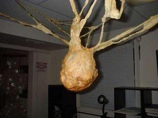

SCP-406-ARC

- Item nº:
- SCP-406-ARC
- Classe do objeto:
- Euclid
Procedimentos Especiais de Contenção:
O SCP-406 deve ser mantido o tempo todo em uma sala bem iluminada e sem ventilação, de 3,05 m x 3,05 m (10 pés x 10 pés). A temperatura deve ser mantida constante em 4,44 graus Celsius. Nenhum funcionário deve interagir com o SCP-406 sem trajes de atmosfera contida e uma pesada blindagem de chumbo ao redor da cabeça. A interação deve se limitar a períodos de no máximo cinco minutos. Nenhuma amostra deve ser coletada, e nenhum teste invasivo que possa romper o SCP-406 é permitido. Qualquer movimento vindo dele deve ser respondido com imersão em nitrogênio líquido até que todo o movimento cesse.
Todo o pessoal que entra ou sai da área deve passar por radiografia e tomografia completas, sem exceção. Funcionários que resistirem devem ser contidos e observados.
Descrição:
O SCP-406 é uma grande massa cerosa que se suspende no teto por várias cordas grossas extrudadas da massa principal. Elas são ocas e penetram superfícies não metálicas à medida que crescem. O crescimento começa com 2,5 cm (1 pol) por dia a 10 graus Celsius e aumenta rapidamente com calor adicional. O SCP-406 é preenchido por milhões de estruturas finas, semelhantes a pelos, capazes de movimento limitado.
O item foi recuperado no sul de Wisconsin, no porão de um lojista local. O sujeito estava desaparecido havia vários dias. O SCP-406 havia crescido com protuberâncias por quase toda a residência, projetando-se para fora das paredes em oito seções, principalmente na cozinha. A remoção foi feita com o uso de uma faca grande.
O SCP-406 passou a liberar milhares de pequenas estruturas semelhantes a pelos, que cobriram todos os sujeitos na residência. As estruturas entraram no corpo e se enterraram em todos os tecidos. Os afetados rapidamente ficaram irracionais, violentos e hipersensíveis à luz e ao calor. Após 24 horas, os sujeitos se reuniram no porão e começaram a ter convulsões violentas. A morte veio três horas depois. O SCP-406 foi encontrado selado novamente e crescendo quando da recuperação. Os sujeitos haviam começado a apodrecer prematuramente e tinham estruturas semelhantes a pelos em toda a carne exposta.